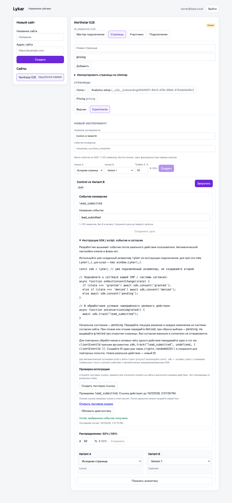
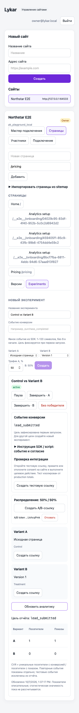

SERVICE-V1-10 — DONE (local)
Именованная цель, host consent и тестовое событие реализованы и проверены. Общий этап E4 продолжает задача 11; внешние gates 07/12 остаются открытыми.
Changed structure
- Admin: новое поле цели и
analytics-setup.tsx с инструкцией, тестовой ссылкой и диагностикой. - API: выбор цели до первого запуска, авторизованные тестовые endpoints, проверка порядка exposure → conversion.
- Migration
014_conversion_goals_and_tests.sql: цель эксперимента, durable per-event totals, отдельные таблицы tests/test events. Старые generic rollups сохранены. - SDK/runtime: awaitable consent, сохранение решения при refresh/SPA navigation, изолированный тестовый режим и стабильные idempotency IDs.
Public/API and data contracts
В новом UI обязательна цель conversionEventName: 1–120 символов, без $ в начале. После first activation она неизменяема. Старые null-goal эксперименты сохраняют общий отчёт; backfill использует только сохранившиеся raw events и не восстанавливает удалённую историю.
CVR = уникальные exposed visitors с выбранной конверсией / exposed visitors. Повторные выбранные действия отображаются отдельным total. Другие события не включаются в выбранную цель. Named totals сохраняются после raw-event pruning.
await sdk.consent('granted'|'denied'|'pending') вызывается системой согласия сайта. Начальное состояние pending; pending/denied не отправляют боевые exposure/conversion. Для повторов одного действия можно передать тот же clientEventId третьим аргументом track; новое действие получает новый ID.
30-минутная ссылка lykar_analytics_test проверяет track на исходной странице. Тестовые consent-сигналы и события хранятся отдельно: нет production assignments, visitors или totals. Goal edits отзывают предыдущие probes; secret удаляется из URL. Тестовый режим сохраняет изоляцию до новой загрузки страницы.
Verification
| Проверка | Результат | Evidence |
|---|
| API / PostgreSQL + HTTP smoke | 95/95, без skips | Лог |
| Runtime / SDK | 112/112 + 112/112 | Лог |
| Browser: analytics setup, S3, SPA | 16/16, no skip/flaky | Playwright JSON |
| Финальный keyboard/UI проход | 3/3: Chromium, Firefox, WebKit | Лог |
| Workspace typecheck | PASS | Лог |
Проверены migration rollback/backfill, tenant isolation, срок действия тестов, frozen goal, concurrent retry, lost response и raw pruning. Контрольные числа заданы вручную: тест даёт 0 боевых показателей; один боевой посетитель даёт 1 view, 1 unique conversion и 2 события выбранной цели; 1 другое событие исключено. Refresh не добавляет view; отказ останавливает последующие события. Desktop/mobile screenshots визуально проверены; это не полный accessibility audit.
Сводка · 321 source/config файл · Метод и ограничения. Source SHA-256: 41141b550d175d05a3f04132e854b275826f32455f3a07d8dd88325455529c89. Рабочий срез поверх a174a97; commit этим отчётом не создаётся.

Desktop: настройка цели и успешная диагностика.
Mobile WebKit: цель и отчёт; таблица прокручивается внутри контейнера.Open risks
Реальные email, HTTPS staging и versioned SDK/CDN distribution (07/12) не настроены этим этапом. Внешняя техническая приёмка и пилот впереди. Удаление expired probe records относится к 14–15. Production idempotency keys живут в raw-event retention period. Статистическая значимость не рассчитывается, автоматическая настройка click/URL/form goals остаётся за рамками минимального explicit-track сценария.
Первый browser attempt выявил ошибки тестового сценария: отсутствие ожидания login и переход только по fragment вместо новой загрузки. Исправлены, затем 16/16 и финальные 3/3 PASS. Локальный лимит PostgreSQL shared memory временно мешал повторному старту; остановлены только базы наших завершённых browser runs. Предыдущие неуспешные attempts не засчитываются.
Next tasks
SERVICE-V1-11: полный A/B workflow по entry-ссылке, QA/share distinction и читаемый отчёт. Инфраструктурные prerequisites 07/12 остаются отдельными задачами.